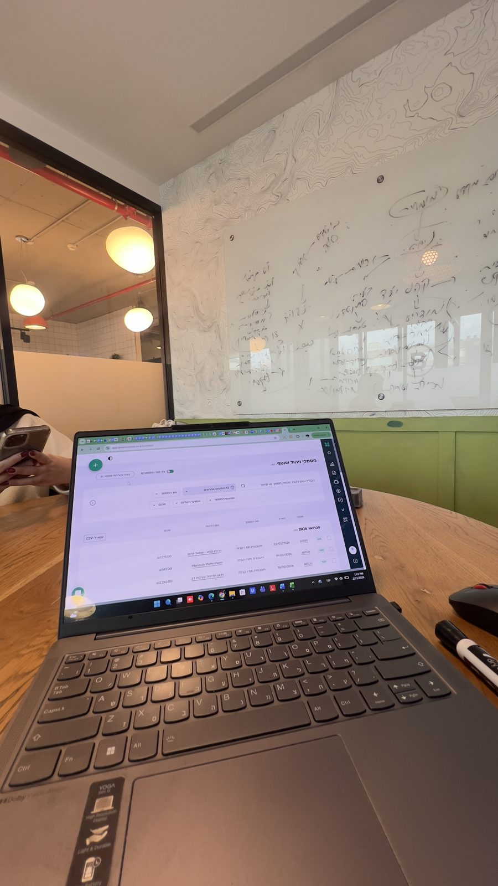

أفكار عن الاستراتيجية والتسعير والأرقام
مقالات قصيرة لأصحاب المشاريع الخدماتية: كيف يُبنى العرض، كيف يُسعَّر، وكيف تُقرأ الأرقام قبل أي قرار.

التسويقالإعلان لا يُصلح عرضًا غير جاهز
لماذا تفشل الحملات الممولة في كثير من المشاريع الخدماتية، وأين يضيع العميل بين الإعلان والقرار، وما الذي يجب أن يكون جاهزًا قبل أول إنفاق.
اقرأ/ي المقال الاستراتيجيةاستراتيجية العمل واستراتيجية التسويق: ما الفرق؟
الفرق بين قرار «أين نلعب وكيف نربح» وبين خطة الوصول إلى العميل، مع مقارنة واضحة، مثال من الواقع، وتمرين عملي لمشروعك.
اقرأ/ي المقال التسويقالتسويق يبدأ من العميل الذي عندك
لماذا يكون الحفاظ على العملاء الحاليين أربح من جذب عملاء جدد، ومثال من الواقع، وأربع خطوات لبناء نظام يحافظ على العميل بعد الشراء.
اقرأ/ي المقال التسعير
التسعيرسعّر النتيجة، لا الساعة
لماذا يتحول التسعير بالجلسة إلى سقف للدخل، وكيف تُبنى الخدمة كمسار مرتبط بنتيجة، مع خطوات عملية لإعادة بناء التسعير.
اقرأ/ي المقال التسعير
التسعيرالتسعير: أقوى رافعة للربح لا يستخدمها أحد
ماذا تقول الأبحاث عن أثر تحسين السعر بنسبة صغيرة على الربح، لماذا يتجنبه أصحاب المشاريع الخدماتية، وكيف يُرفع السعر بثقة ومن دون خسارة العملاء.
اقرأ/ي المقال الأرقامالدخل ليس ربحًا
لماذا يكبر الدخل في كثير من المشاريع الخدماتية ولا يكبر الربح، وأين يضيع الهامش، وكيف تبني/ين ملفًا ماليًا يكشف أي خدمة تربح فعلًا.
اقرأ/ي المقال الاستشارةماذا يفعل مستشار الاستراتيجية فعلًا؟
الفرق بين الاستشارة الاستراتيجية والنصيحة العامة أو الدورة، مثال من مرافقة حقيقية، ومتى يحتاج المشروع الخدماتي إلى مرافقة.
اقرأ/ي المقال